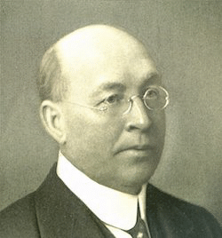
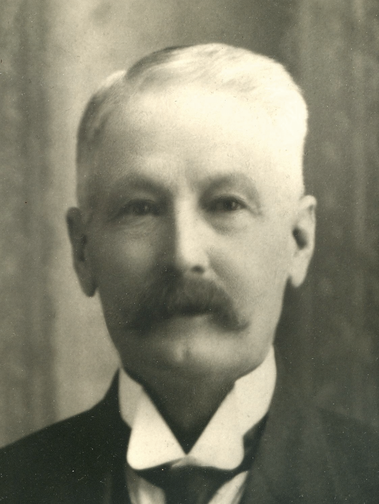
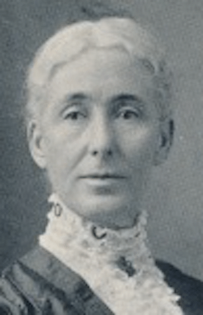

-1-MasterItem.svg)
Stories of Westminster United Church & its People / Page
14
ANGUS (& JANET) BROWNE, MERCHANT
Angus was born in Elderbank, Halifax County, Nova Scotia in 1844.
It wasn’t until he was 35 that he moved to Winnipeg, where he
would make considerable impact on its community and business.
In Winnipeg, he met and married Janet. He established a building
supply company at 250 Sutherland Avenue, a canny career move
in a young city where building was a core growth activity. Angus
was, with Janet, a founding member of Westminster Church, and
also played a vital role in the fledgling Winnipeg School Board, where he served
for 15 years and was
twice elected Chairman. In 1898, as School Trustee, he had the honour of laying
the cornerstone
of Isbister school, with a silver trowel no less, in what was described by
observers as a “grand
ceremony.” (Isbister is the oldest school in Winnipeg and still exists at 310 Vaughan
Street as an
Adult Education Centre). In 1922, Angus died in his home at 101 Monck Avenue in
Norwood.
COLIN CAMPBELL, LAWYER AND POLITICIAN
Colin was born in Burlington, Ontario in 1859. At 23, he moved to Winnipeg,
already fairly experienced as a lawyer, and was called to the Manitoba Bar. He
joined the law firm Robertson and Andrews, to whose corporate masthead he
would eventually add his name; reforming the firm under the partnership and
company name of Campbell and Pitblado. Within a year of his arrival in Winnipeg,
Colin was appointed a Queen’s Counsel. Having already served as a city councillor in 1889, he ran as
a Conservative in the Manitoba General Elections of 1899. He won his seat,
representing the Morris
constituency, and served under premier Hugh John Macdonald, the son of John A.
Colin’s ascent into
Hugh John Macdonald’s inner political circle was swift and impressive: the former was appointed a
member of Macdonald’s cabinet in January 1900, and within a year he was the province’s Attorney-
General. He was re-appointed to this position by Rodmand Roblin, who succeeded
Macdonald as
Premier. Colin held that position for over a decade, before again playing
ministerial musical chairs:
becoming Minister of Education in 1911 and eventually Minister of Public Works.
In an age where
the political “revolving door” didn’t carry the stigma that it does today, Colin was relatively free



Our Founders